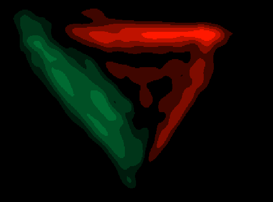

mt_diffmap creates a difference-heatmap of the trajectory data using
gaussian smoothing. Note that this function has beta status.
mt_diffmap(x, y = NULL, condition = NULL, use = "trajectories", dimensions = c("xpos", "ypos"), filename = NULL, bounds = NULL, xres = 500, upscale = 4, smooth_radius = 10, colors = c("#00863F", "#000000", "#FF1900"), n_shades = 1000, plot = TRUE, ..., verbose = TRUE)
| x | an object of class |
|---|---|
| y | an object of class |
| condition | logical vector matching the number of trajectories in
|
| use | a character string specifying which trajectory data should be used. |
| dimensions | a character vector specifying the trajectory variables used to create the heatmap. The first two entries are used as x and y-coordinates, the third, if provided, will be added as color information. |
| filename | a character string giving the name of the file. If
|
| bounds | numeric vector specifying the corners (xmin, ymin, xmax, ymax)
of the plot region. By default ( |
| xres | an integer specifying the number of pixels along the x-dimension.
An |
| upscale | a numeric value by which the output resolution of the image is increased or decreased. Only applies if device is one of tiff, png, or pdf. |
| smooth_radius | a numeric value specifying the standard deviation of the gaussian smoothing. If zero, smoothing is omitted. |
| colors | a character vector specifying the colors used to color
cases of |
| n_shades | integer specifying the number of shades for the color
gradient between the first and second, and the second and third color in
|
| plot | logical specifying whether resulting image should be plotted
( |
| ... | arguments passed to mt_heatmap_raw. |
| verbose | logical indicating whether function should report its progress. |
mt_diffmap takes two objects that either contain trajectory heatmaps
or from which trajectory heatmaps can be computed. Difference-heatmaps are
constructed analogously to mt_heatmap_raw.
mt_diffmap(KH2017, condition=KH2017$data$Condition=="Typical", xres=400, smooth_radius=6, n_shades=5)#> Determine joint bounds #> Calculating heatmap for x #> Calculating heatmap for y #> smooth image #> creating heatmap: 400 x 245 px#> heatmap created in 2s